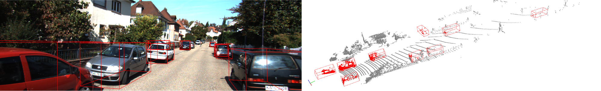
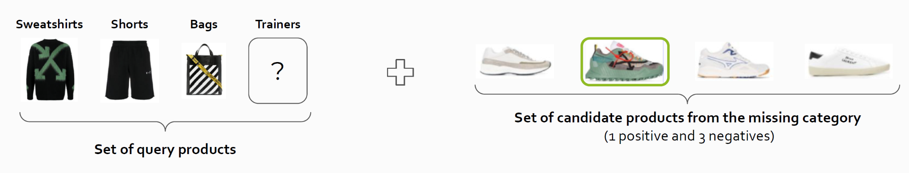

Bio
Hi, I am a Postdoctoral Researcher currently working on 3D reconstruction using robotic manipulators at CCHT, IIT, Italy. I completed my PhD at the PAVIS Lab, IIT, where I specialized in 3D object detection and multimodal fusion for enhanced 3D scene perception. I'm always open to collaboration on research and projects that align with mutual goals. Feel free to reach out.
News
September 2024
We presented "AAPOE: Automated Artifacts Position and Orientation
Estimation in cultural Heritage" at IEEE/ASME MESA 2024
November 2023
The preprint of My recent work: "mmFUSION:Multimodal Fusion for 3D object detection" is availeble on arXiv
July 2023
I am thrilled to announce that I will be joining ICVSS summer school at Catania, Sicily
January 2023
Our journal paper "Fill in the blank for fashion complementary outfit product Retrieval:
VISUM summer school competition" has been published
May 2022
I attended ICIAP conference at Lecce and presented my paper
May 2021
My Team "Json" won the project competition "Fashion Complementary Outfit Product Retrieval" among all participants at VISUM summer school
July 2020
My Team "3-2-1-D Band" won unconference project idea competition among all participants at EEML summer school
Publications
AAPOE: Automated Artifacts Positions and Orientations Estimation in Cultural Heritage
IEEE/ASME MESA 2024
Preprint will be availabe soon

mmFUSION: Multi-modal Fusion for 3D Objects Detection
arXiv (2023)
[paper]
Code can be request through emailing to me
